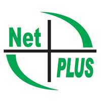

At the very beginning of the ninth grade I became very interested in programming, majorly because it was
something that I had touched before but also because I had a curiosity for it.
My parents noticed my interest and decided to enroll me at the NetPlus College of Information Technology,
for the one time fee of 700$ of course.
There I met my teacher, Ravi, and interacted with individuals interested in programming just asmuch as I
was.
I studied for the python accociate certification and earned it early 2025. At the same college I studied for
the Professional certification
and earned it just this year in june. Now I study there for Java and hope to revieve my certification soon.
I learned that having the right enviornment, significanlty boosts ones interest and ability to learn.
